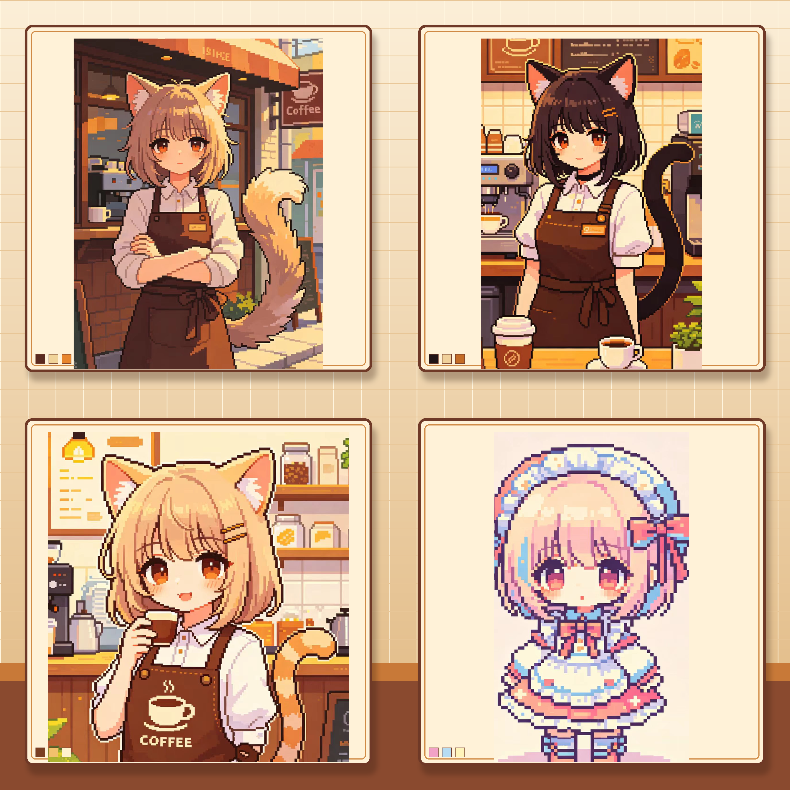
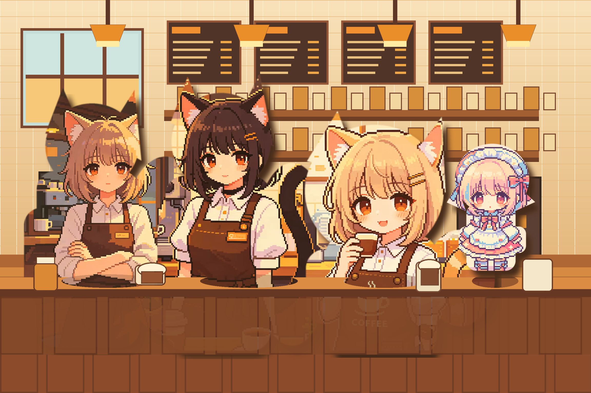
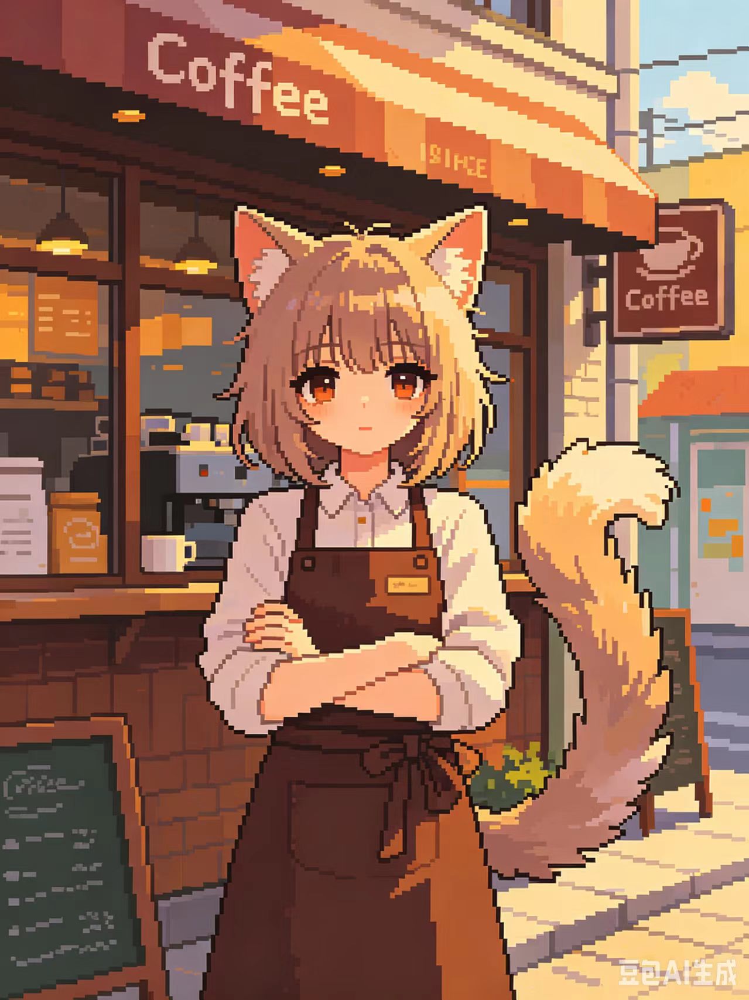
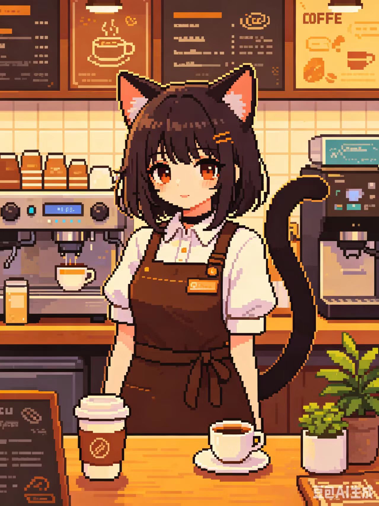
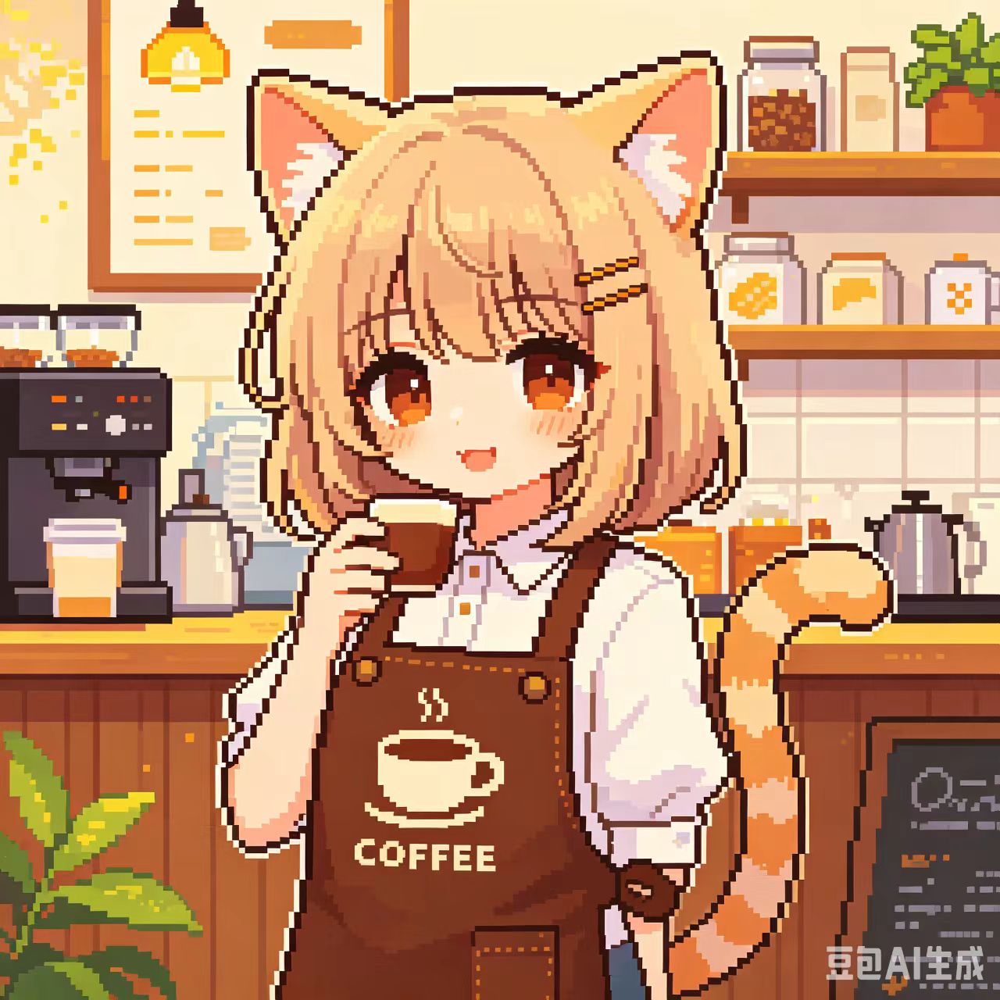
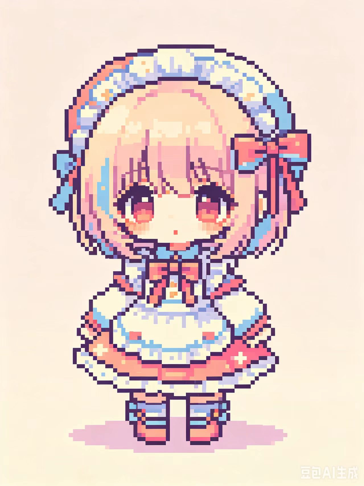

四角色参考评估板

用于检查角色顺序、发色、耳朵、尾巴、围裙、比例和 chibi 角色定位。
当前版本用于评估四个参考角色的统一建模方向、咖啡馆构图和后续生成条件。

用于检查角色顺序、发色、耳朵、尾巴、围裙、比例和 chibi 角色定位。

用于检查四个角色放入同一咖啡馆后的站位、前后层次和整体暖色像素氛围。




本机设置好 OPENAI_API_KEY 后运行：
powershell -ExecutionPolicy Bypass -File output/imagegen/run-concept-sheet-v1.ps1
概念设定板确认满意后，再运行最终咖啡馆场景生成：
powershell -ExecutionPolicy Bypass -File output/imagegen/run-final-cafe-scene-v1.ps1
检查当前参考图、预览图、提示词、脚本和页面引用：
python output/imagegen/validate-imagegen-workflow.py
真正生成图产出后，使用严格验收：
python output/imagegen/validate-imagegen-workflow.py --require-generated